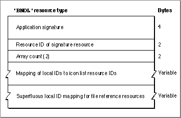
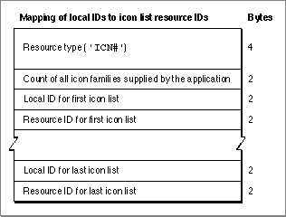
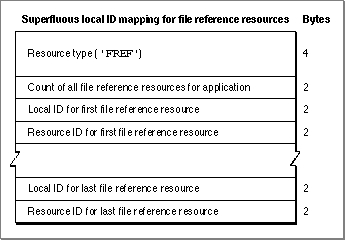

The Bundle Resource
To group together your application's signature, icon list resource, and file reference resources, create a bundle resource. A bundle resource is a resource with the resource type'BNDL'. All bundle resources must have resource ID numbers greater than 128,
and all must be made purgeable.This section describes the structure of the bundle resource after it is compiled by the Rez resource compiler. The format of a Rez input file for a bundle resource differs from its compiled output form. If you are concerned only with creating a bundle resource, see "Creating a Bundle Resource" beginning on page 7-19.
Figure 7-25 Structure of a compiled bundle (
'BNDL') resource
If you examine a compiled version of a file reference resource, as illustrated in
Figure 7-25, you find that it contains the following elements:If you examine the compiled portion of a bundle resource that maps local IDs to icon list resource IDs, you find that it contains the following elements:
- Application signature. This is the unique four-character code that identifies the application to the Finder. (Application signatures are described in "Giving a Signature to Your Application and a Creator and a File Type to Your Documents" beginning on page 7-7.)
- Resource ID of the signature resource. By convention, this should always be 0.
- Array count. This element should always contain the value 2.
- Mapping of local IDs to icon list resource IDs for all icons supplied by the application. This is illustrated in Figure 7-26.
- Superfluous local ID mapping for file reference resources. This is illustrated in
Figure 7-27.Figure 7-26 Mapping local IDs to icon list resource IDs in a bundle resource
- Resource type. This element should always specify the resource type
'ICN#'(that is, an icon list resource).- Count of all the icon families supplied by the application. This is the number of local ID-to-icon list resource ID mapping pairs in the rest of this resource.
- Local ID for an icon list resource. This local ID must match the local ID assigned to the icon list resource within a file reference resource.
- Resource ID for the icon list resource assigned a local ID in the preceding element. To visually represent files of the type described in the file reference resource that contains the local ID in the preceding element, the Finder uses the black-and-white icon and mask described in this icon list resource. The Finder also uses the icons defined in the following resources with this same resource ID: small icon list resource, small 4-bit color icon resource, small 8-bit color icon resource, large 4-bit color icon resource, and large 8-bit color icon resource.

Figure 7-27 illustrates the remainder of a bundle resource, which assigns local IDs to
- Local ID-to-icon list resource ID mapping pairs for the rest of the icons representing file types for an application.
file reference resource IDs. This assignment is superfluous because the Finder doesn't map these local IDs to any other resources. This ID assignment was implemented for
the earliest versions of Macintosh system software, and it remains this way today to maintain backward compatibility.Figure 7-27 Structure of superfluous local ID mapping for file reference resources in a
bundle resource
If you examine the compiled portion of the remainder of a bundle resource, you find that it contains the following elements:
- Resource type. This element should always specify the resource type
'FREF'(that is, a file reference resource).- Count of all the file reference resources representing file types for an application.
This is the number of local ID-to-file reference resource mapping pairs in the rest of this resource.- Local ID for a file reference resource. The local ID can be any integer so long as no other file reference resource is given that same local ID within this resource.
- Resource ID for the file reference resource assigned a local ID in the preceding field.
- Local ID-to-file reference resource ID mapping pairs for the rest of the file reference resources that represent file types with application-supplied icons.